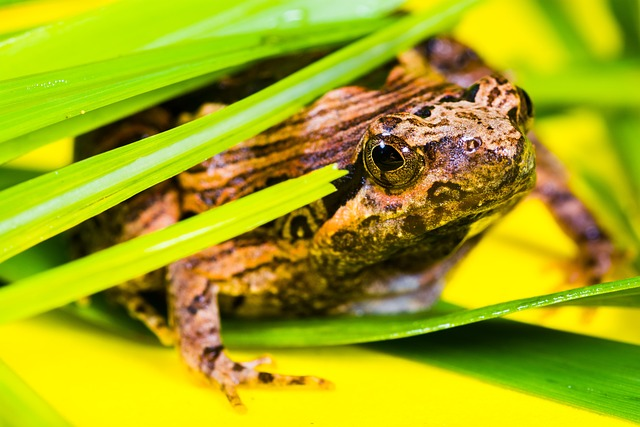
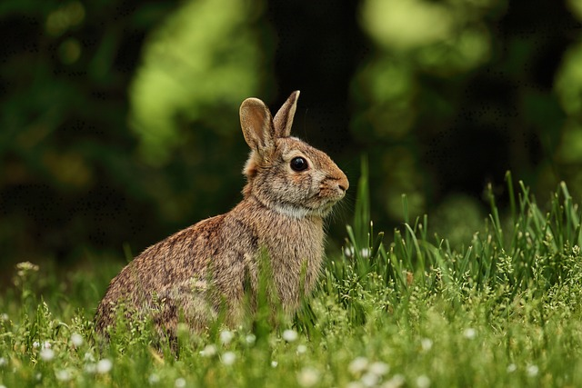
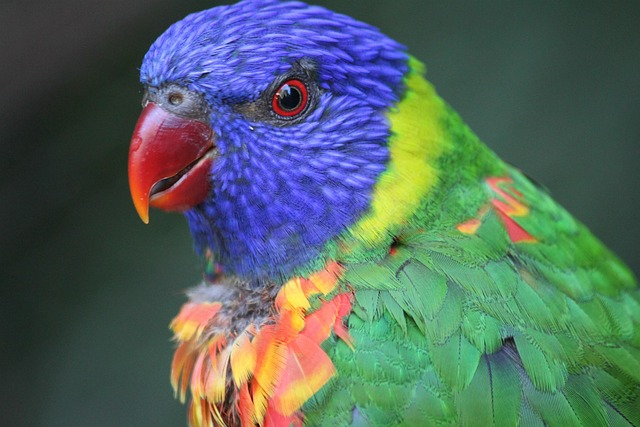

Bull frogs can jump up to 6 feet in a single leap!

Bunnies are born with their eyes closed and without fur.
Guinea pigs are social animals that thrive in the company of other guinea pigs.
Kittens are born with blue eyes.

These small and colorful birds are among the best talkers in the avian world.
Puppies are born without the ability to hear or see.